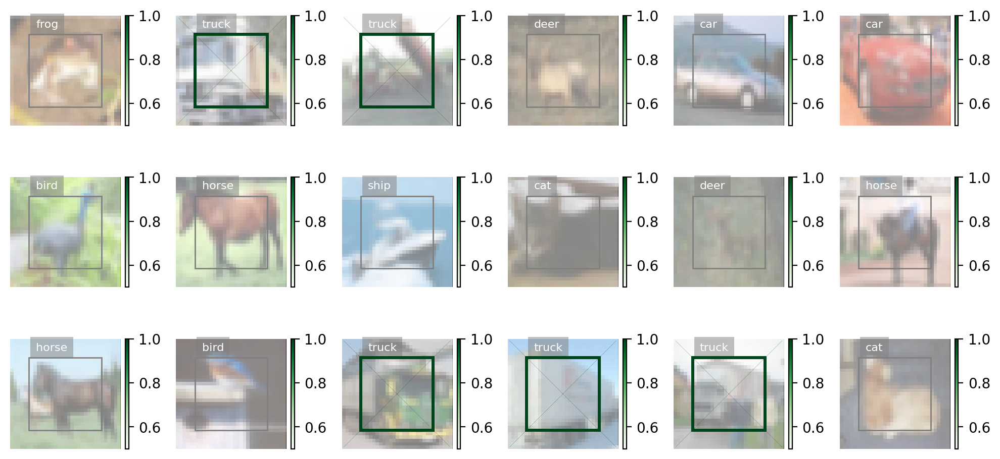

%matplotlib inline
Cifar10¶
This plugin is part of openpifpaf.contrib. It demonstrates the plugin architecture.
There already is a nice dataset for CIFAR10 in torchvision. The plugin adds a DataModule that uses this dataset.
import openpifpaf
openpifpaf.plugins.register()
# configure
openpifpaf.contrib.cifar10.datamodule.Cifar10.debug = True
openpifpaf.contrib.cifar10.datamodule.Cifar10.batch_size = 1
# instantiate and inspect
datamodule = openpifpaf.contrib.cifar10.datamodule.Cifar10()
datamodule.head_metas
(CifDet(name='cifdet', dataset='cifar10', head_index=None, base_stride=None, upsample_stride=1, categories=('plane', 'car', 'bird', 'cat', 'deer', 'dog', 'frog', 'horse', 'ship', 'truck')),)
We see here that CIFAR10 is being treated as a detection dataset (CifDet) and has 10 categories.
To create a network, we use factory() function that takes the name of the base network cifar10net and the list of head metas.
net = openpifpaf.network.factory(base_name='cifar10net', head_metas=datamodule.head_metas)
We can inspect the training data:
# configure visualization
openpifpaf.visualizer.Base.all_indices = [('cifdet', 9)] # category 9 = truck
openpifpaf.visualizer.Base.processed_image_intensity_spread = 1.0
openpifpaf.visualizer.CifDet.show_regressions = True
# create a canvas and loop over the first few entries in the training data
with openpifpaf.show.canvas(ncols=6, nrows=3, figsize=(10, 5)) as axs:
train_loader_iter = iter(datamodule.train_loader())
for ax in axs.reshape(-1):
openpifpaf.visualizer.Base.common_ax = ax
next(train_loader_iter)
